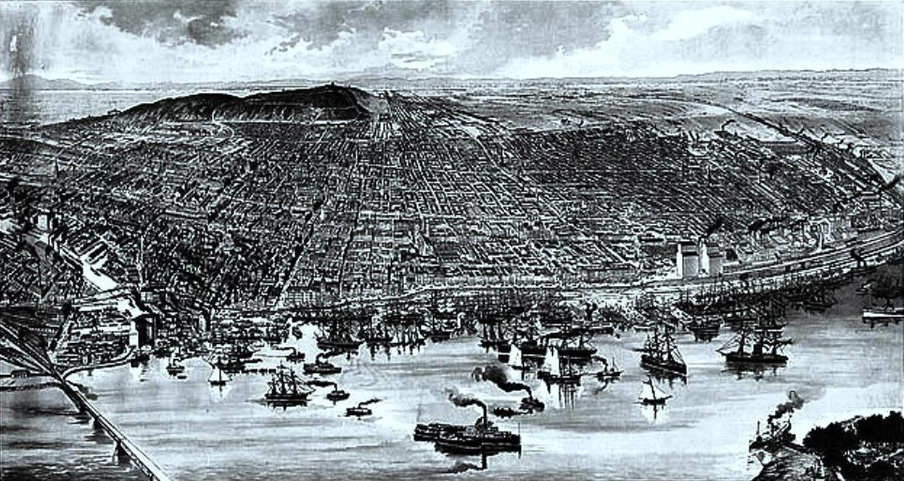
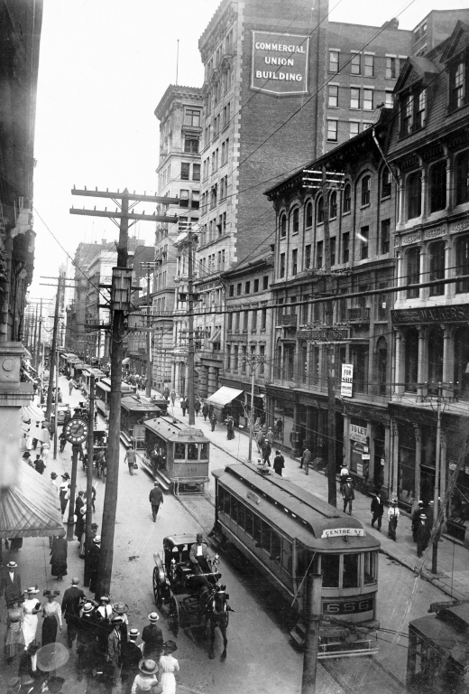

Archaeological evidence demonstrates that First Nations native people occupied the island of Montreal as early as 4,000 years ago.By the year AD 1000, they had started to cultivate maize. Within a few hundred years, they had built fortified villages.The Saint Lawrence Iroquoians, an ethnicity distinct from the Iroquois nations of the Haudenosaunee then based in present-day New York, established the village of Hochelaga at the foot of Mount Royal two centuries before the French arrived. Archeologists have found evidence of their habitation there and at other locations in the valley since at least the 14th century.The French explorer Jacques Cartier visited Hochelaga on October 2, 1535, and estimated the population of the native people at Hochelaga to be "over a thousand people".
Seventy years later,the French explorer Samuel de Champlain reported that the St Lawrence Iroquoians and their settlements had disappeared altogether from the St Lawrence valley. This is believed to be due to outmigration, epidemics of European diseases, or intertribal wars.In 1611 Champlain established a fur trading post on the Island of Montreal, on a site initially named La Place Royale. At the confluence of Petite Riviere and St. Lawrence River, it is where present-day Pointe-à-Callière stands.[51] On his 1616 map, Samuel de Champlain named the island Lille de Villemenon, in honour of the sieur de Villemenon, a French dignitary who was seeking the viceroyship of New France.In 1639 Jérôme Le Royer de La Dauversière obtained the Seigneurial title to the Island of Montreal in the name of the Notre Dame Society of Montreal to establish a Roman Catholic mission to evangelize natives.
On May 17, 1642, Ville-Marie was founded on the southern shore of Montreal island, with Maisonneuve as its first governor,Who is an French man.By 1685 Ville Marie was home to some 600 colonists, most of them living in modest wooden houses. Ville Marie became a centre for the fur trade and a base for further exploration.The Canadian territory was ruled as a French colony until 1760, when it was surrendered to Great Britain after the Seven Years' War.Ville Marie was the name for the settlement that appeared in all official documents until 1705, when Montreal appeared for the first time, although people referred to the "Island of Montreal" long before then.
|  |
| OlympicStadium |
Montreal was incorporated as a city in 1832. The opening of the Lachine Canal permitted ships to bypass the unnavigable Lachine Rapids, while the construction of the Victoria Bridge established Montreal as a major railway hub. The leaders of Montreal's business community had started to build their homes in the Golden Square Mile (~2.6 km2) from about 1850. By 1860, it was the largest municipality in British North America and the undisputed economic and cultural centre of Canada.
Montreal was the capital of the Province of Canada from 1844 to 1849, but lost its status when a Tory mob burnt down the Parliament building to protest the passage of the Rebellion Losses Bill.For strategic reasons, Queen Victoria herself established Ottawa as the capital. The reasons were twofold; as it was located more in the interior of the nation, it was less susceptible to US attack. Perhaps more importantly, as it lay on the border between French and English Canada, the then small town of Ottawa was seen as a compromise between Montreal, Toronto, Kingston and Quebec City, who were all vying to become the young nation's official capital
|  |
| St.JamesSt.-Montreal |